問題を簡単にするため、まずはx軸上の直線経路の追従を考えます。 オドメトリで触れたように、ロボットの座標は次のような方程式であらわされます。 ただし、(定数)としました。
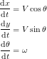この方程式には、非線形項(sinとかcos)が含まれるので、解析しやすいように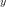やが十分に小さいという仮定の下 線形近似を行います。
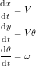制御モデルの作成の最後のほうでふれていますが、 天地人では速度と向きの目標値を与えて、足回りを制御しています。 速度制御器と向き制御器のゲインが十分に大きいと仮定すれば、目標値と実際の速度と向きは一致するとみなせます。 ここで、向きから経路のずれまでの伝達関数を考えると次のようになります。
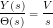ロボットが直線上つまりy=0となるように制御すればよいので、 この制御対象に対して次のようなフィードバックをかけてみます。
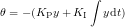すると伝達関数は次のように変わりますね。
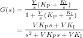分母=0と置いて根が左半平面にくるように設計すれば、制御系を安定にすることができます。
次に曲線経路追従について考えてみます。 x軸上の直線経路ではy座標でフィードバックをかけましたが、 曲線経路では経路とロボットの距離でフィードバックをかけます。
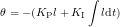| 図1 曲線経路の追従 |
さらに、経路上ではロボットの向きが経路の接線の向き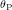と一致するようにします。 結果、ロボットの目標向き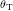
追従する経路をどのように設定するかを考えてみましょう。 天地人では次のような経路の設定方法をしました。
数式が単純で、経路との距離や接線の方向が計算が簡単なので、実装が容易な方法です。 ただし、一見なめらかな経路でも、直線と円弧のつなぎ目で曲率半径が大きく変わってしまいます。 そのような部分ではロボットの角速度を急激に変化させる必要があるため、動きが乱れることがあります。
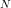個の制御点を用いて作られる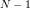次のパラメトリックな曲線です。 天地人では、描画ソフトによく使われる3次ベジエ曲線を用いています。
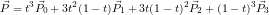なめらかな曲線を直感的に作成することができるので便利です。 しかし、ロボットと経路の距離を数式で表すことが出来ないため、制御プログラムが複雑になります。 天地人ではニュートン法による数値計算を行い距離を算出しています。
走行距離に比例して、曲率が変化する曲線です。 経路追従時に、ロボットの角速度がなめらかに変化するため動きが乱れることがありません。 急激なハンドル操作を防ぐために高速道路などにも使われている曲線です。
しかし、クロソイド曲線を用いた経路設計は非常に複雑で、小規模のマイコンでリアルタイム処理を行うのは困難です。 そこで、天地人では、予めパソコン上でクロソイド曲線を用いた経路を設計し、 それをベジエ曲線で近似することで経路設計を行ないました。
パソコン上の設計ツールも、手を抜いて既存の描画ソフトを使用しました。 使用した描画ソフトはInkscapeです。 Inkscape上での曲線はすべて3次のベジエ曲線で表現されているため、制御点の座標を読み取ればそのまま天地人へ入力することが出来ます。 また、Inkscape標準の保存形式であるSVGはテキストベースであるため、これらの制御点を抽出するプログラムを容易に書くことが可能です。 さらに、Inkscapeのパスエフェクト機能に「スピロスプライン」というエフェクトがあります。 これは、幾つかの制御点を与えると、クロソイド曲線を使用して制御点を補完してくれる機能です。 SVG形式で保存すると、クロソイド曲線での補完結果を自動的に3次のベジエ曲線で近似してくれるため、変換に面倒な計算は一切必要ありません。